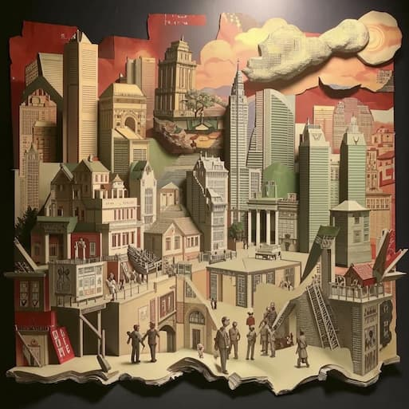

Благодаря специальным добавкам, бумага может иметь свойства водонепроницаемости и огнеупорности. Эти характеристики делают её еще более универсальным и надежным материалом, который используется в различных сферах, от упаковки до строительства.
Изготовление бумажных самолетиков, известных также как "оригами", имеет давнюю историю, берущую свое начало тысячи лет назад. Это искусство сочетает в себе творчество и точность, демонстрируя, как из простого материала можно создавать сложные и красивые формы.
Существует огромное разнообразие типов бумаги — более 10 000 видов, каждый из которых имеет свою конкретную сферу применения. Это позволяет удовлетворять различные потребности, от художественной бумаги до бумаги для упаковки.
Стандартный формат А4 бумаги имеет вес приблизительно 5 граммов. Этот универсальный размер используется во многих странах и стал стандартом для офисной документации.
В Китае в 14 веке была изготовлена первая туалетная бумага, что стало важным шагом в развитии личной гигиены и комфорта. Этот инновационный продукт проложил путь для дальнейших улучшений в области санитарии.
Сохранение некоторых древних рукописей на бумаге сопровождается особыми условиями, позволяющими им просуществовать многие века. Это свидетельствует о важности бумаги как носителя знаний и истории.
Несмотря на продвижение цифровых технологий, многие люди до сих пор остаются преданными бумажным книгам. Физический формат книги предоставляет уникальный опыт чтения и взаимодействия с текстом.
История бумажных карт начинается более тысячи лет назад в Китае. Карты стали важным инструментом для навигации и исследования, способствуя развитию торговли и культуры.
В мире есть самый большой лист бумаги, который имеет размеры 39,9 х 39,9 метра. Этот рекордный экземпляр демонстрирует, как далеко может зайти человеческое творчество в использовании бумаги.
Если представить, что офисный работник использует около 10 000 листов бумаги ежегодно, это может сделать впечатление. Такой объем потребления подчеркивает важность устойчивого использования ресурсов и переработки бумаги.
Изучение истории бумаги и её разнообразных применений открывает нам глаза на её значимость в нашем обществе. От древних рукописей до современных технологий, бумага продолжает играть ключевую роль в нашей жизни, напоминая нам о важности бережного отношения к ресурсам и наследию, которое она представляет.